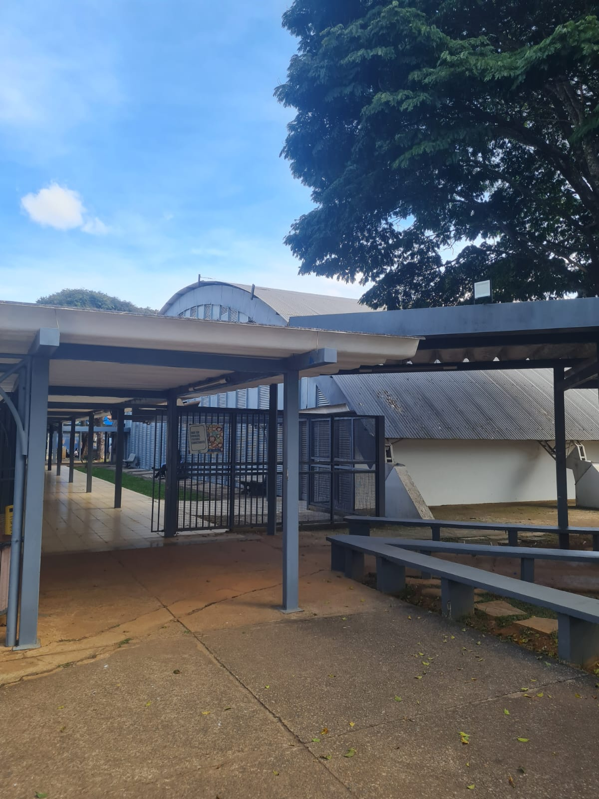

DESCRIÇÃO
O Ginásio 1 da Universidade Católica de Brasília, localizado ao lado do bloco M e em frente ao bloco central, é um espaço amplo, projetado para a prática de diversas modalidades esportivas. Equipado com uma quadra poliesportiva padrão, o ginásio é utilizado para aulas de educação física, eventos esportivos e treinos de equipes universitárias. O local conta com arquibancadas confortáveis, iluminação de alta qualidade e infraestrutura para atender competições de médio porte. É um ponto de encontro para os estudantes que desejam praticar esportes e manter uma vida ativa dentro do campus.